This is the demo lecture accompanying the API calls and data visualization lecture. Here, we're going to look at what we're going to build in this lecture, the tools we use, some of the code structure of what is provided and we're going to make our first HTTP requests to our API to get some data to visualize. So, after this lecture, this is what we're gonna have - a simple website.
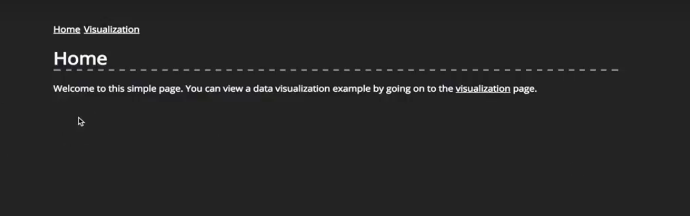It has very a simple menu appear on navigation, the home page has some text, this is where we are at at the moment and a visualization page.
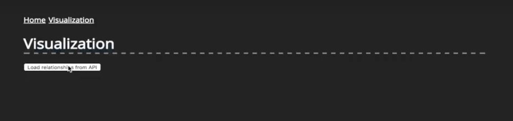This one has a button and when I click this button, there will be an API called using HTTP requests that returns relationship data from characters of the Game of Thrones novels. If I click it, it will release that data and create a network visualization using the D3 library.
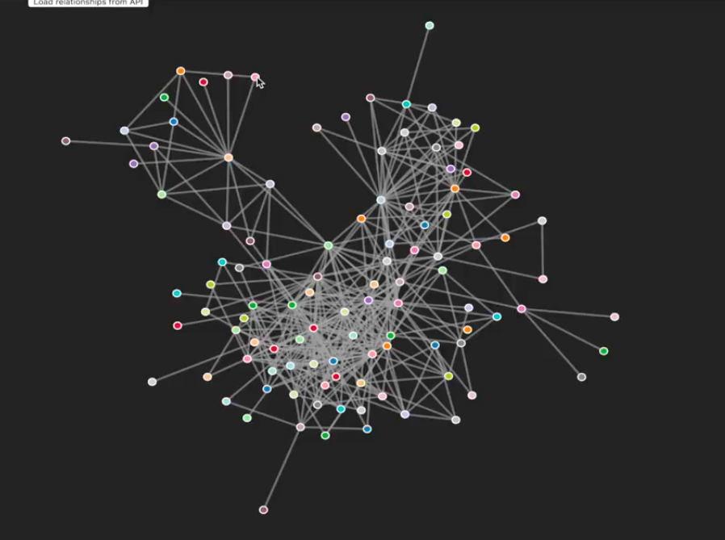And in this visualization, each of the nodes represents a character and the links between them represent their relationships. And at the end, we guys, are going to add a little bit of interactivity. So, if I click any of the nodes, they'll change their color and increase in size. And on a double click, they should back down again and become red. So, that's what we're going to build now. Let's take a look at what we're going to need first.
So, let's take a little look at the code that is provided from previous lectures. So, I'm in the folder right now and there's a bunch of loose files and two folders app and public.
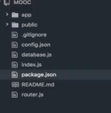The first thing to look at is the package.json, which is the heart of any Node application.
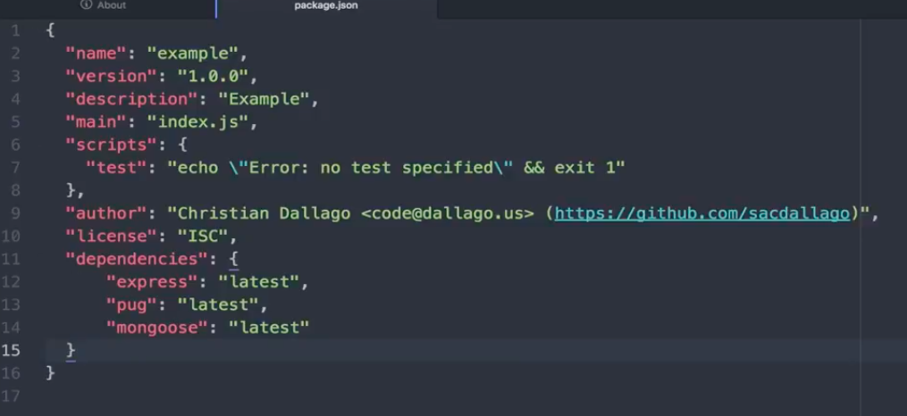It has a couple of things, like the name, the version and the description and it has some dependencies as well, which are very important, because we gonna need those to run our local server. The server itself is in the index.js. It is an express server. So, all we gonna do later is type node in index.js and that will run the server for us. Now, all the server-side code is in the app folder.
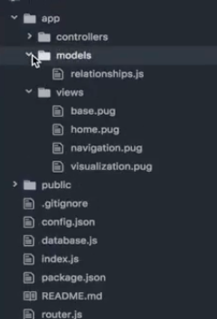It has the controllers, the models and the views. These views are template files that will be rendered into HTML and then displayed in the browser.
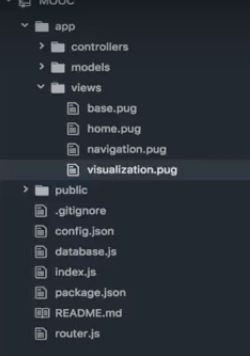Just a quick recap about what's in the template of our visualization page - it extends the base view, which means they'll include things like the navigation and we don't have to type that code in any page that wants to use navigation, which is provided once and then we extend the other by using the other views. We're linking a stylesheet. That is just a simple CSS file that defines things like the color of the links between the nodes and we have the content block that has the title you've seen before in the visualization on top, it defines the button and we have an empty root element that we will later populate using D3 with our visualization.
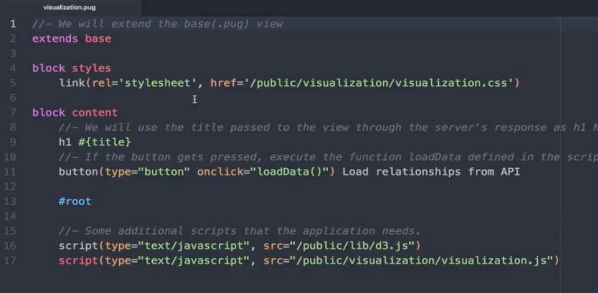Then for that to work, we also include some JavaScript files down here. First one is a D3 library and then the second one is our visualization.js where we will put our own code. One thing to note here is that this button has an attribute called onclick.
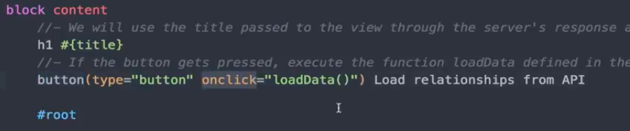So, anytime you click this button, the following code is executed. In our case, it calls the loadData function. Now, to get to that loadData function, take a look at the public folder.
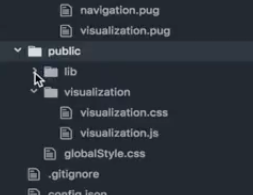This folder holds all the client-side JavaScript code. So, we have a lib folder that holds all the dependencies or the libraries you want to use. In this case, it's only the D3 library, if I actually need to look at that. We have a visualization folder that has anything to do with visualization. In this case, it's our little stylesheet, just defining what the nodes and the links look like and it has the visualization.js, which is where all the magic is going to happen.
In visualization.js is where we're going to get data from the API and then create a visualization. In the code we have two functions. The first one is the loadData() function and, remember, this gets called whenever we click our button. So, we gonna load data from the backend in this one and then we're going to send that data to the second function createVisualization() that will create the visualization on our page using D3.
In order to get started, we need to use the code that we already have. You need to run the server, so the client-side code gets executed and provides us with the API, so, we can get some data in this part here. So, let's go to our terminal.
The first step we need to do is to install all dependencies.
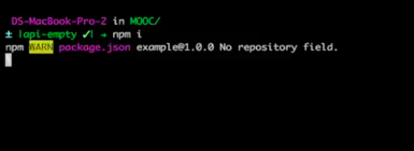Luckily, because this is an NPM package, you can just run npm install, because if you remember, taking a look back here, the package.json defines all the dependencies we need. So, I'm going to run npm install. Actually, npm i is enough, because if you type that a lot that actually saves some time. And after a short moment, we have all our dependencies installed.
Now we can run node index.js
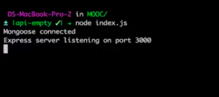We get Mongoose connected to the database, and the Express server is running and we can start getting some data from our API.
If we go back to the browser now, navigate to localhost:3000, we will already get our little page, because the server is running. And, these, what you can see here, are rendered templates that we defined in the server's code.
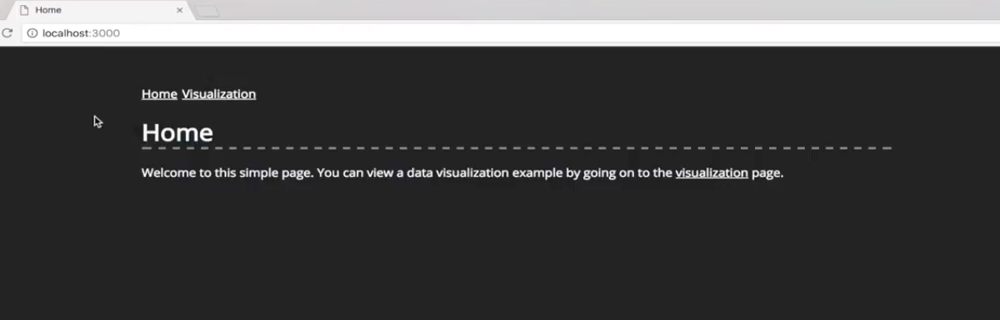Now going back to our code and opening the visualization.js file, the loadData() function is called as soon as we press the visualization button. So let's take a look at what we need to do to actually get some data from our API.
We will be using the classic native JavaScript way to do it with an XMLHttpRequest() object. If you're lucky enough to develop only for modern browsers, the upcoming version of JavaScript actually has a new API, called Fetch. If you are working in Node, you can also use it already, but for now we're just going to use the classic way and as you can see for our little example here, it's really easy to use.
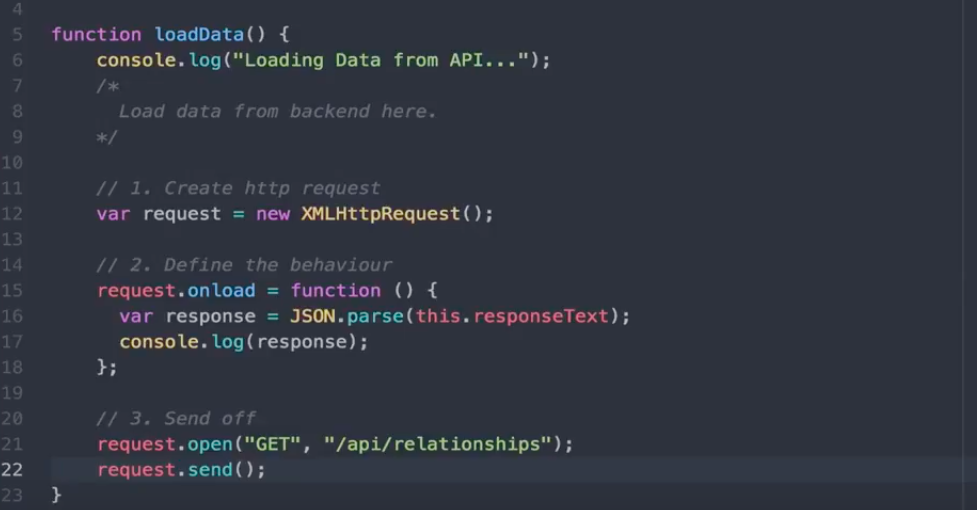So, the function performs three steps:
So, let's start at the beginning. We'll create a new variable that holds our request and it holds an instance of a XMLHttp Request Right. That's the first step - done. Now we need to define what we actually want to do if the request was successful. And, the request object implement a number of events. Those will be called at different times of the request and then the interaction with the backend. So, for example, when the request makes first contact with the backend, there will be an event. When the backend starts sending data, there will be an event and there is also an event that gets fired as soon as the request successfully has transferred all the data from the backend and that's the one we'll be looking at. We can define the onload event now. What we're doing here is basically find a function that gets called every time the request is done loading data from the backend. And now we can create a new variable called response that will hold the data sent from the back-end. To access it, we need to access the request. In this case, we can access access this with the this keyword and then we'll get the responseText. So, that's all that we need. However, this response text, as it says, is a string and in our case, because we know the API is sending JSON data, this text is actually a JSON string. So, what we need to do to use it as a JavaScript object, is we need to do JSON.parse(this.responseText).
And now here, is where we find what we actually want to do with the data. In this first video, we're not going to do anything with it. The next one, we're gonna transform it in a way that we can use it with D3 later on, but for now, let's just log it to the console, so we can take a look at it. That's all we need to define here. The third step and the final step of sending an HTTP request is, we need to instantiate it using the open function. We need the open function to know what kind of HTTP request type we are sending. We will be sending a get request. You will also have to define the URL that we're sending request to. In our case, we are staying in the same domain that we are running currently. So, on the localhost:3000. So, obviously, those define the route on that domain for the API and on the endpoints relationships. And the server is defined, if there is a get request coming to that route, it'll return the relationship data. And, finally, we have to send it off. That's it. It's all we need to get data from the backend using HTTP request in JavaScript. The native way, no external libraries are needed.
So, let's get back to our browser, reload the page and click the button again.
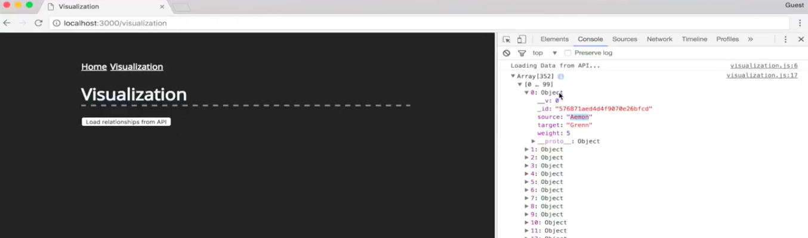As you can see, we get returned an array of objects and if we look a bit closer, these objects are relationships of characters. So, we have an object that has a couple of attributes. Some of them are for internal use of the API and here are the interesting bits, which is the source of the interaction and the target of the interactions, or two characters, and the weight as well. And, these are all different interactions.